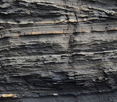

GEOLOGICAL FIELD OBSERVATION

셰일은 오랜 세월 동안 호수나 바다에 쌓인 점토가 단단하게 굳으며 형성된 퇴적암의 한 종류다
셰일은 점토와 미사 크기의 입자로 구성된 암석으로서 전 퇴적암의 55%를 차지하는 가장 흔한 암석이다
세립질의 쇄설성 퇴적암인 셰일은 아주 얇은 층리 여러 겹으로 이루어져 있으며, 층리를 따라 얇은 조각으로 쉽게 분리되는 박리성이 나타난다.
셰일은 입자 지름이 1/16mm 이하인 실트(silt)와 점토로 이루어지며,
포함된 성분에 따라 규질 셰일, 석회질 셰일, 탄질 셰일, 흑색 셰일, 응회암 셰일, 사질 셰일로 구분된다
← 메인 페이지로 돌아가기